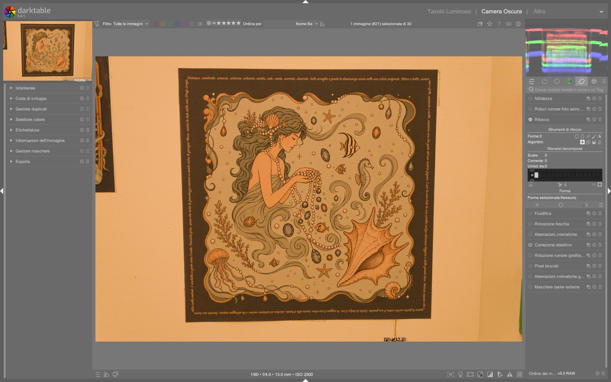

Modulo Retouch¶
Il modulo retouch è lo strumento centrale per la rimozione selettiva di elementi indesiderati (macchie, fili, sensor dust, riflessi) e per il ritocco avanzato della pelle, del cielo o di altre aree critiche. A partire da darktable 4.8, sostituisce definitivamente il modulo deprecato spot removal, integrando clonazione, guarigione (heal), riempimento (fill) e sfocatura (blur) in un’unica interfaccia modulare, con supporto nativo alla decomposizione wavelet per un controllo multilivello dei dettagli12.
Retouch è il modulo di ritocco avanzato predefinito
Dal 2019, retouch è il modulo ufficiale per tutte le operazioni di rimozione e correzione locale. Il vecchio spot removal è stato rimosso dalla pipeline in darktable 4.6+ e non è più disponibile nei nuovi profili di sviluppo13.
Panoramica¶
Retouch opera su due livelli concettuali distinti ma complementari:
- Rimozione geometrica: tramite forme disegnate (circle, ellipse, path, brush) che definiscono l’area da modificare (target) e quella da cui attingere dati (source).
- Elaborazione multilivello: grazie alla decomposizione wavelet, permette di applicare gli stessi interventi su scale di dettaglio separate — dai bordi grossolani (livelli 5–6) alle texture fini della pelle (livelli 1–2) — senza alterare i dettagli non coinvolti12.
A differenza di Lightroom’s Spot Removal o Photoshop’s Healing Brush, retouch non lavora su un singolo layer piatto: ogni livello wavelet è elaborato indipendentemente e poi ricomposto matematicamente, preservando la struttura reale dell’immagine2. Questo evita l’effetto “plastico” tipico dei metodi a sfocatura globale, come dimostrato nell’articolo PIXLS.US su Mairi, dove la pelle mantiene pori e rughe naturali anche dopo una marcata omogeneizzazione tonale2.
Flusso di lavoro consigliato¶
Il flusso ottimale per ritocchi professionali si articola in tre fasi sequenziali21:
1. Esposizione & bilanciamento colore (exposure, white balance, color calibration)
|
2. Decomposizione wavelet (modulo retouch → sezione "wavelet decompose")
|
3. Ritocco selettivo per scala (cloning/healing su livelli 4–6; blur su livelli 1–3)
Wavelet prima di tutto
Esegui sempre la decomposizione wavelet prima di qualsiasi intervento di ritocco. Se applichi clone o heal direttamente sull’immagine non decomposta, perderai il controllo sulle frequenze e rischierai di appiattire dettagli critici come capelli, barba o trame tessili21.
Passo 1: Configurazione wavelet¶
La prima azione pratica è impostare il numero di livelli wavelet:
- Clicca sul triangolo sotto la barra grafica wavelet decompose e trascinalo verso destra1
- Valore tipico:
5livelli per immagini full-frame (4000×6000 px);4per immagini APS-C (3000×4500 px)2 - Default:
0(nessuna decomposizione attiva) — non usare mai questo valore per ritocchi seri1
Passo 2: Selezione della scala¶
Dopo aver impostato i livelli, seleziona quello da modificare:
- Clicca su uno dei quadrati grigi nella barra:
- Quadrati a sinistra = dettagli fini (livelli 1–2, ~1–3 px di raggio)
- Quadrati a destra = dettagli grossolani (livelli 4–6, ~10–50 px di raggio)1
- Usa preview single scale per visualizzare esclusivamente quel livello, con auto-levels abilitato per migliorare la visibilità1
Non saltare la preview
Senza preview single scale, non puoi valutare se un livello contiene effettivamente il difetto da correggere (es. una macchia su livello 5 ma non su livello 2). L’errore più comune è applicare heal su una scala sbagliata, generando artefatti invisibili in anteprima ma evidenti in stampa2.
Passo 3: Algoritmo e forma¶
Scegli l’algoritmo in base al tipo di difetto:
| Algoritmo | Quando usarlo | Valore tipico |
|---|---|---|
| Heal | Macchie di pelle, brufoli, piccoli oggetti su sfondo uniforme | mask opacity: 0.7–0.91 |
| Clone | Oggetti su sfondi strutturati (es. fili su cielo nuvoloso) | mask opacity: 1.01 |
| Blur | Omogeneizzazione di texture (es. pelle su livello 1–2) | blur radius: 1.5–4.0 px; blur type: bilateral2 |
| Fill | Rimozione di oggetti su sfondi solidi (es. cavi su parete bianca) | fill color: campionato con pipetta; brightness: ±0.051 |
Parametri principali¶
| Parametro | Range | Default | Descrizione |
|---|---|---|---|
| scales | 0 – 8 |
0 |
Numero totale di livelli wavelet estratti. Ogni livello rappresenta una banda di frequenza distinta1. |
| current | 0 – max_scale |
0 |
Livello wavelet attualmente selezionato per l’editing. 0 = immagine completa (senza decomposizione)1. |
| merge from | 0 – max_scale |
0 |
Se > 0, tutti gli interventi su un livello vengono replicati sui livelli inferiori fino a questo valore. Utile per correggere un difetto su più scale con un solo tratto1. |
| mask opacity | 0.0 – 1.0 |
1.0 |
Opacità della maschera applicata. Valori < 1.0 consentono una fusione graduale con il sottostante1. |
| blur radius | 0.1 – 10.0 px |
1.0 px |
Raggio dello sfocatura per l’algoritmo blur. Valori > 3.0 richiedono merge from per evitare effetti “a macchia”2. |
| blur type | gaussian, bilateral |
gaussian |
Bilateral preserva i bordi; preferito per ritocchi cutanei su livelli fini2. |
| fill mode | erase, color |
color |
In modalità erase, il colore di riempimento è calcolato come media dell’area circostante1. |
Gestione source/target¶
Per garantire risultati naturali, la posizione di source e target deve essere controllata con precisione:
- Source in “relative mode”:
Shift + clicksul punto di origine → il simbolo+si fissa relativamente al cursore. Successivi target erediteranno lo stesso offset1. - Source in “absolute mode”:
Ctrl + Shift + click→ il simbolo+si fissa in coordinate assolute, utile per copiare da una zona precisa (es. una porzione di cielo blu uniforme)1. - Posizionamento simultaneo: per circle/ellipse, clicca e trascina dal target al source in un’unica azione1.
Regola d’oro per il healing
Per un heal efficace, la distanza tra source e target non deve superare i 50 px. Oltre questo limite, il mismatch di illuminazione e colore genera bordi visibili2.
Flusso di lavoro per la pelle (caso studio)¶
Basato sull’approccio Mairi di PIXLS.US2:
- Decomponi in 5 livelli → seleziona current = 4 (dettagli medi, ~10 px)
- Applica heal su macchie e discromie con
mask opacity = 0.85 - Passa a current = 2 (texture fine) → usa blur con
radius = 2.2 px,type = bilateralper ammorbidire pori senza eliminare rughe - Usa merge from = 2 per propagare il blur anche su livello 1 (massima finezza)
- Controlla con preview single scale: livello 4 mostra la correzione tonale, livello 2 conferma che la texture è preservata2
Walkthrough da video tutorial¶
Esempio: Skin retouching with wavelet decomposition (Bruce Williams, darktable FR)¶
Da darktable ep 027 - The Retouch module (timestamp 8:12)
1. Imposta scales = 5 e attiva preview single scale
2. Seleziona current = 5 (livello più grosso) e usa heal per rimuovere discromie tonali con mask opacity = 0.82
3. Passa a current = 3, imposta blur radius = 1.8, blur type = bilateral, e applica su zone di transizione tra guance e fronte
4. Attiva merge from = 2 e disegna un cerchio su current = 2 per uniformare pori senza toccare rughe
5. Disattiva preview single scale e verifica il risultato su zoom 100%4
Esempio: Retouche beauté avec décomposition en ondelettes (JC Tutos, darktable FR)¶
Da Tuto N° 18 : Le module RETOUCHE . 2éme partie (timestamp 12:47)
1. Per ritoccare occhi rossi: seleziona current = 6, usa heal con mask opacity = 0.95, source campionato da sclera vicina
2. Per ridurre occhiaie: passa a current = 4, imposta blur radius = 2.5, blur type = gaussian, e applica con maschera ellittica verticale
3. Per preservare ciglia: disattiva merge from, quindi applica clone su current = 1 con mask opacity = 0.35
4. Verifica con display masks attivo per assicurarsi che nessuna maschera copra le ciglia5
Esempio: Portrait skin smoothing workflow (PIXLS.US Mairi)¶
Da Skin Retouching with Wavelet Decompose (fig. “Mairi Wavelet Decompose Smooth 5 by Pat David”)
1. Decomponi in 5 scales, seleziona current = 5
2. Applica blur con radius = 3.2, type = bilateral, mask opacity = 0.88 su guance e fronte
3. Passa a current = 2, usa heal con mask opacity = 0.75 per macchie isolate
4. Su current = 0 (immagine completa), applica fill con brightness = +0.03 per uniformare luminosità globale della pelle2
Domande frequenti¶
Problema: Maschera heal lascia un alone scuro intorno al target¶
Questo accade quando source e target hanno differenze di esposizione > 0.3 EV. Soluzione: usare relative mode con Shift+click, quindi spostare il target in una zona con luminosità simile prima di applicare l’intervento. Alternativamente, applicare heal su current = 5 (dove le differenze di luminosità sono attenuate) invece che su livello completo1.
Problema: Effetto “plastico” persistente anche con wavelet¶
Spesso causato da blur radius > 4.0 px applicato su current = 1 o 2 senza merge from. La soluzione è limitare blur radius a ≤ 3.0 px su livelli fini, oppure usare merge from = 1 solo per interventi molto localizzati2.
Problema: Forme path non si chiudono correttamente su curve complesse¶
Il modulo retouch richiede almeno 4 punti per chiudere un path in modo stabile. Se la curva è troppo stretta (< 15° di angolo interno), aggiungere manualmente un punto intermedio con Ctrl+click sul segmento. Non utilizzare path per bordi con raggi < 5 px: preferire brush con size = 3.0 e *opacity = 0.4`1.
Consigli avanzati¶
- Per il cielo: usa clone su livello 5–6 con source da una zona priva di nubi, quindi applica blur leggero (
radius = 1.0) su livello 3 per fondere i bordi3. - Per i capelli: evita heal o blur. Usa clone su livello 1 con
mask opacity = 0.3per un effetto trasparente che preservi i singoli filamenti2. - Per le alte luci: se un riflesso è presente solo su livelli alti (5–6), correggilo solo lì: non propagarlo a livelli più fini, altrimenti distruggeresti dettagli cromatici1.
- Tempi di rendering: la decomposizione wavelet aumenta il carico CPU. Per immagini ad alta risoluzione (>24 MP), riduci i livelli a
4o abilita OpenCL nelle preferenze3.
Parametri da evitare
I seguenti valori compromettono la qualità del risultato:
- merge from > current — causa duplicazione non controllata degli interventi1
- blur radius > 5.0 px senza merge from — genera macchie sfocate isolate2
- mask opacity < 0.3 per heal su pelle — produce effetti “fantasma” difficili da correggere2
Preset built-in¶
Il modulo retouch include preset preconfigurati accessibili tramite il pulsante presets (icona a tre puntini) nel pannello superiore. I preset ufficiali sono:
| Preset | Quando usarlo | Note |
|---|---|---|
skin smoothing |
Ritocco pelle rapido | Imposta scales = 5, current = 4, algorithm = heal, mask opacity = 0.851 |
sky cleanup |
Rimozione fili/nubi su cielo | Imposta scales = 6, current = 6, algorithm = clone, mask opacity = 1.01 |
portrait blemish |
Correzione brufoli/macosce | Imposta scales = 5, current = 5, algorithm = heal, mask opacity = 0.91 |
fine detail preservation |
Capelli, barba, trame tessili | Imposta scales = 5, current = 1, algorithm = clone, mask opacity = 0.251 |
Riferimenti visuali¶

{kind=link}
Risorse aggiuntive¶
- 📘 Manuale ufficiale darktable – retouch
https://docs.darktable.org/usermanual/development/en/module-reference/processing-modules/retouch/ - 📺 Video tutorial: Skin Retouching with Wavelet Decompose (PIXLS.US)
https://pixls.us/articles/skin-retouching-with-wavelet-decompose/ - 📺 Tutorial FR: Le module RETOUCHE – décomposition en ondelettes
https://darktable.fr/posts/2019/01/tuto-n-18-le-module-retouche-2eme-partie-decomposition-en-ondelettes-pour-la-retouche/ - 📺 Video tutorial ENG: The diffuse and sharpen module (A Dabble in Photography)
https://www.youtube.com/watch?v=jHlPh7gt3Y0
Fonti¶
-
darktable user manual - retouch, https://docs.darktable.org/usermanual/development/en/module-reference/processing-modules/retouch/# ↩↩↩↩↩↩↩↩↩↩↩↩↩↩↩↩↩↩↩↩↩↩↩↩↩↩↩↩
-
PIXLS.US - Skin Retouching with Wavelet Decompose, https://pixls.us/articles/skin-retouching-with-wavelet-decompose/ ↩↩↩↩↩↩↩↩↩↩↩↩↩↩↩↩↩↩↩
-
darktable.fr – Nouveautés darktable 4.6 (FR), https://darktable.fr/posts/2023/12/darktable_4.6/ ↩↩↩
-
darktable.fr – Tuto N° 18 : Le module RETOUCHE . 2ème partie : DECOMPOSITION EN ONDELETTES, https://darktable.fr/posts/2019/01/tuto-n-18-le-module-retouche-2eme-partie-decomposition-en-ondelettes-pour-la-retouche/ ↩
-
darktable.fr – Tuto N° 18 : Le module RETOUCHE . 2ème partie (video timestamp 12:47), https://darktable.fr/posts/2019/01/tuto-n-18-le-module-retouche-2eme-partie-decomposition-en-ondelettes-pour-la-retouche/ ↩